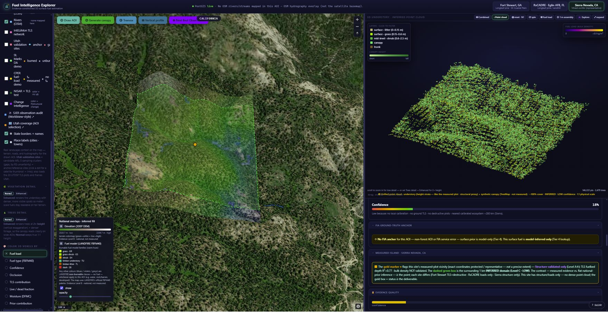
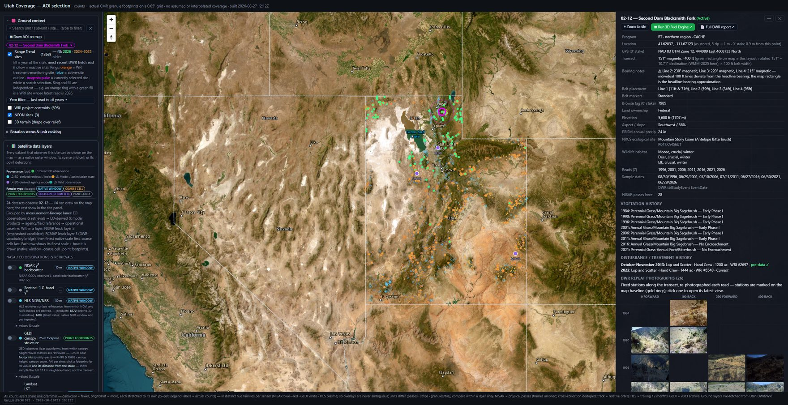

ClimaIQ fuses satellite, radar, and field measurements into an open, uncertainty-aware map of vegetation condition and change — explorable down to a single acre, with every value labeled by how it was known.

Most maps hand you a number with no idea whether it was measured on the ground or guessed by a model. ClimaIQ labels every layer on a four-level evidence ladder — so you always know what you can lean on.
Both run in your browser on public NASA and agency data — no account, no install.
Draw an area anywhere in the continental US. The engine queries every intersecting dataset — lidar, NISAR L-band, Sentinel, EMIT hyperspectral — and reconstructs 3D surface fuels, each layer tagged by evidence level.
Open ↗
Every DWR Range Trend monitoring site and Watershed Restoration Initiative project in the state, with every satellite acquisition that observes them — the exact footprints, not assumed coverage.
Open ↗Condition and change are different questions. ClimaIQ answers each with the observation suited to it.
The accumulated satellite record estimates current condition — bare ground, shrub and tree canopy, herbaceous cover — wall-to-wall, including everywhere field crews can't reach, each prediction confined to a stated applicability domain.
NISAR L-band radar, revisiting every site every 12 days, detects change between field visits — treatment, fire, or moisture — on observations the annual record can't yet see.
Held-out predictive skill on Utah DWR Range Trend sites that were not used to train the models — condition estimated from the satellite archive, scored against the crew's actual measurements.
Open the explorer, or reach out to put your agency's monitoring network on the map.